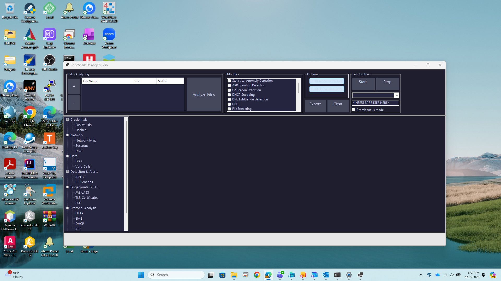
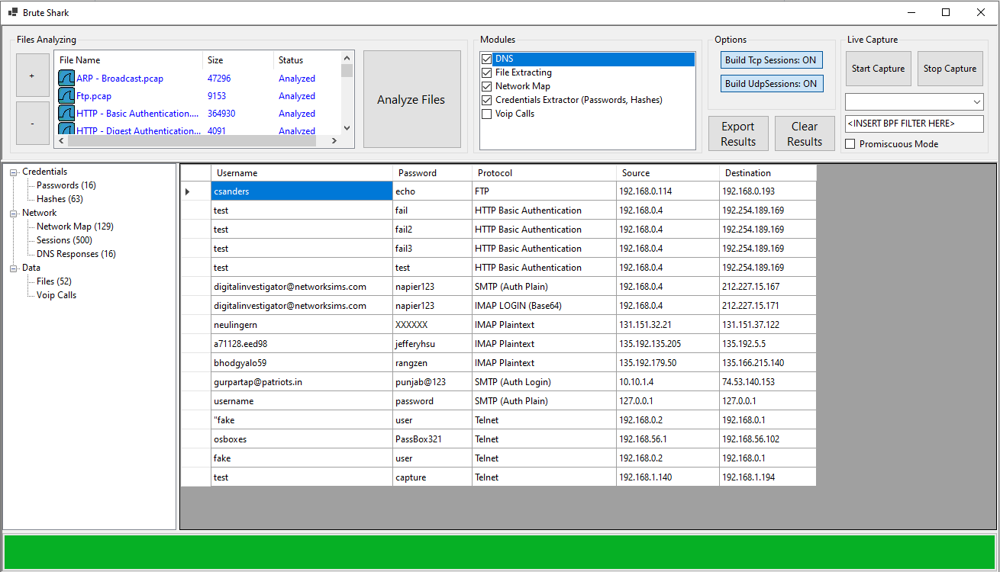
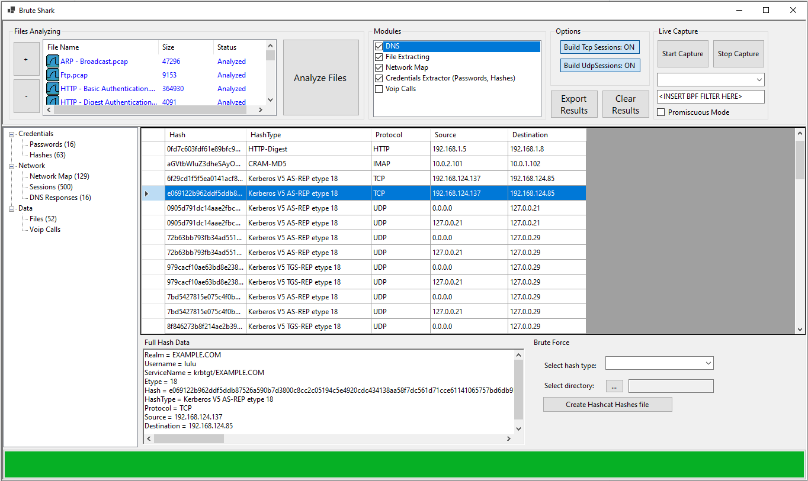
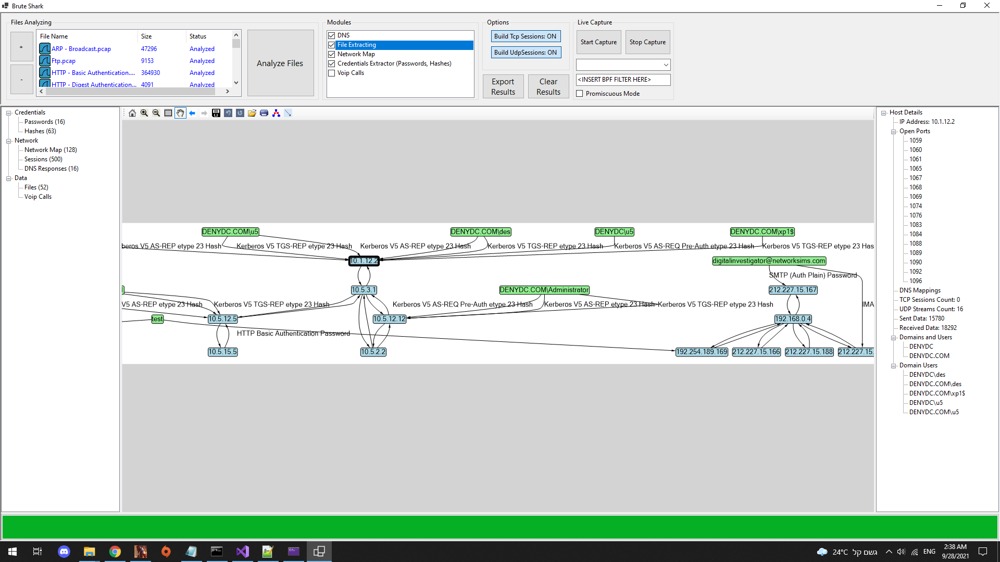
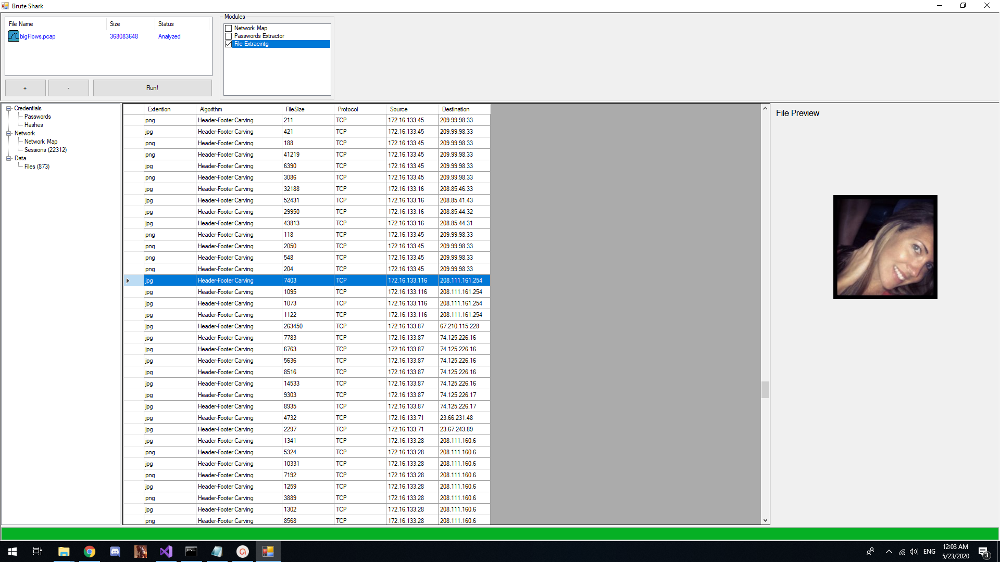

🦁 BruteShark Studio v2.0
A professional-grade network forensic analysis platform for Windows. Extract credentials, detect C2 beacons, fingerprint TLS & SSH, identify anomalies, and export comprehensive investigation reports — all from an intuitive desktop interface or automated CLI pipeline.
🔐 19 Credential Parsers
LDAP, NTLM, Kerberos, HTTP, FTP, SMTP, IMAP, POP3, VNC, RDP NLA, SNMP, IRC + more
🛡️ Threat Detection
C2 beacon hunting, JA3/JA3S fingerprinting, YARA rules, payload patterns, DNS exfiltration
🔍 16 Analysis Modules
Auto-discovered via reflection — enable only what you need for faster processing
📊 Multi-Format Export
HTML, PDF, JSON, CSV, STIX 2.0, MISP, Zeek logs, Hashcat, IOC, timeline
🌐 REST API
localhost:8089 — programmatic access to results, status, IOCs, and reports
🔨 Hashcat Built-In
Bundled Hashcat with 30+ rule files, system PATH integration via installer
🚀 What's New in v2.0
New Analysis Modules
- Beacon Detection — statistical C2 beacon hunting
- JA3 Fingerprinting — TLS client fingerprinting
- Flow Aggregation — NetFlow-style traffic summary
- DNS Exfiltration — detect data tunneling via DNS
- Payload Pattern — regex-based payload scanning
- ARP Spoofing — ARP cache poisoning detection
- SSH Fingerprint — host key extraction & MITM detection
- HTTP Metadata — request/response metadata extraction
- SMB Dissector — NTLM over SMB & named pipes
- DHCP Snooping — rogue DHCP & lease tracking
- TLS Certificate — X.509 cert extraction & analysis
- Anomaly Detection — statistical baselining
New Features
- HTML Forensic Reports — dark-themed, collapsible, searchable
- PDF Reports — self-contained, no dependencies
- Zeek-Format Logs — conn.log, dns.log, ssl.log, http.log
- STIX 2.0 / MISP — threat intelligence sharing
- REST API — programmatic access on port 8089
- AbuseIPDB Integration — IP reputation scoring
- YARA Rule Support — load external YARA rules
- SQLite Case DB — persistent case management
- Session Viewer — hex dump with protocol annotations
- Professional Dark Theme — modern UI styling
- Tooltips — context help on every control
- Desktop & Start Menu Shortcuts
⚡ Quick Start Guide
- Install — Run
BruteSharkDesktopStudioInstaller.msi(requires admin for PATH setup). - Launch — Double-click the desktop shortcut or find "BruteShark Desktop Studio" in Start Menu.
- Load files — Click Add Files and select
.pcapor.pcapngcaptures. - Select modules — Check the modules you need in the sidebar. Default: all enabled.
- Configure sessions — Keep TCP & UDP reconstruction ON for full analysis depth.
- Run — Click the Run button. Progress bar shows analysis status.
- Review — Click tree nodes to inspect passwords, hashes, network maps, alerts, and more.
- Export — Click Export Results to generate HTML/PDF reports, CSVs, and Hashcat files.
🏗️ Architecture
┌──────────────────────────────────────────────────────────┐
│ BruteShark Studio v2.0 │
├────────────┬────────────┬────────────┬────────────────────┤
│ Desktop │ CLI │ REST API │ Wireshark Plugin │
│ (WinForms) │ (Console) │ (HTTP:8089)│ │
├────────────┴────────────┴────────────┴────────────────────┤
│ CommonUi Layer │
│ Exporting · CaseManager · IocExporter · TimelineGenerator│
│ PdfReportGenerator · ZeekLogExporter · FullHtmlReport │
├───────────────────────────────────────────────────────────┤
│ PcapProcessor Layer │
│ Packet Capture · TCP/UDP Reassembly · Session Tracking │
├───────────────────────────────────────────────────────────┤
│ PcapAnalyzer Layer │
│ 14 IModules auto-discovered · 19 Credential Parsers │
│ JA3 · Beacon · Flow · DNS Exfil · ARP · SSH · SMB · DHCP │
│ TLS Certs · Anomaly Detection · YARA · Detection Rules │
├───────────────────────────────────────────────────────────┤
│ BruteForce Layer │
│ Hashcat Runner · Hashcat Format Conversion │
└───────────────────────────────────────────────────────────┘🖥️ Main Window

Interface Components
| Component | Description |
|---|---|
| Module Tree (left) | Navigation tree with collapsible nodes for each result category |
| File List (top-right) | Loaded capture files with processing status indicators |
| Control Bar | Add/Remove files, Run analysis, Export results, Clear workspace |
| Session Toggles | Enable/disable TCP and UDP session reconstruction |
| Live Capture | Interface selector, BPF filter, Promiscuous mode, Start/Stop |
| Module Checklist | Toggle individual analysis modules on/off |
| Results Panel (right) | Context-sensitive viewer for the selected tree node |
| Progress Bar | Shows analysis progress and current status |
📁 Loading Capture Files
- Click Add Files to open the file picker.
- Select one or more
.pcapor.pcapngfiles. - Files appear in the list with Wait status.
- Click Remove Files to remove selected files from the pending list.
- Files are processed in order when you click Run.
tshark -F pcap -r input.pcapng -w output.pcap🧩 Analysis Modules
Modules are auto-discovered at startup via .NET reflection. Enable or disable modules from the checklist in the sidebar. Disabled modules skip processing entirely — useful for large captures.
Module Categories
🔐 Credentials & Hashes
Extracts passwords, NTLM hashes, Kerberos tickets, LDAP binds, HTTP auth, SMTP/IMAP/POP3 credentials, VNC challenges, RDP NLA hashes, SNMP communities, IRC passwords, and more. Output appears in Passwords and Hashes views.
🌐 Network Map & Sessions
Builds endpoint relationship graphs from observed connections. Enriches nodes with port data, DNS names, and credential context. Reconstructed TCP/UDP sessions available in the Sessions viewer with hex dumps.
🛡️ Threat Detection
C2 Beacon Detection — statistical analysis of connection timing to identify periodic beaconing.
DNS Exfiltration — detects data tunneling through DNS queries (entropy, length anomalies).
Payload Patterns — regex-based scanning for shells, malware signatures, suspicious strings.
Detection Rules — 12 built-in rules + YARA rule loading for custom detection.
ARP Spoofing — detects ARP cache poisoning / MITM attacks.
Anomaly Detection — statistical baselining for bandwidth spikes and unusual traffic.
🔍 Fingerprinting
JA3/JA3S — TLS client/server fingerprinting with 13 known-malicious signature database.
SSH Fingerprint — host key extraction and key-change detection for MITM identification.
TLS Certificate — X.509 certificate parsing with suspicious cert detection (self-signed, expired).
📡 Protocol Analysis
HTTP Metadata — request/response headers, User-Agent tracking, URL extraction.
SMB Dissector — NTLM over SMB, named pipe detection, share enumeration.
DHCP Snooping — rogue DHCP server detection, lease tracking, starvation detection.
Flow Aggregation — NetFlow-style 5-tuple flow records with byte/packet counts.
📦 Data Extraction
File Carving — extracts 50+ file types from TCP streams (images, archives, docs, executables).
DNS Responses — collects DNS name-to-IP mappings for endpoint enrichment.
VoIP Calls — SIP/RTP call reconstruction with audio export capability.
📋 Result Views
Passwords View
Tabular display of extracted credentials showing Protocol, Username, Password, Source IP, and Destination IP. Columns are sortable. Right-click to copy values.

Hashes View
Displays extracted authentication hashes with Hash Type, Username, truncated Hash value, and Source/Destination. Features include:
- Filter by hash type (NTLM, Kerberos, etc.)
- Export in Hashcat format (grouped by hash type)
- Copy individual hash to clipboard
- One-click Crack with Hashcat workflow

Network Map View
Visual graph showing endpoint relationships. Nodes represent IP addresses, enriched with DNS names, open ports, and credential context. Edges represent observed connections. Features zoom, pan, and node selection.

Sessions View
Reconstructed TCP and UDP sessions with protocol-aware hex dump viewer. Features text/hex search and protocol annotation highlighting. Expand any session to see full payload data.
Alerts & Beacon Detection
Detection rule matches with severity badges:
- Critical — confirmed exploitation or C2 activity
- High — strong indicators of compromise
- Medium — suspicious but not confirmed
Beacon results show Beacon Score (0-100%), Interval, Jitter Ratio, and Probable C2 Server.
Fingerprint Views
JA3/JA3S — TLS fingerprints with matching against known-malicious signature database. Shows JA3 hash, JA3S hash, and associated IPs.
SSH Fingerprints — host key hashes with change detection alerts for potential MITM.
TLS Certificates — X.509 cert details with suspicious flagging (self-signed, expired, long validity).
Files, DNS, VoIP
Files — carved files from TCP streams with type detection for 50+ formats.
DNS — name-to-IP mappings with query/response pair tracking.
VoIP — SIP call records with RTP stream export capability.

Protocol Analysis
HTTP Metadata — request URLs, User-Agent strings, response codes.
SMB Sessions — NTLM auth over SMB, named pipe connections.
DHCP Activity — lease assignments, rogue server alerts.
Anomaly Detection
Statistical anomalies detected during analysis:
Bandwidth Spikes — traffic volume 3× above baseline.
Packet Rate Anomalies — potential DoS indicators.
Unusual Ports — connections to rare or suspicious ports.
Host Volume — hosts generating disproportionate traffic.
📤 Exporting Results
Click Export Results and choose an output directory. The export creates a structured folder:
BruteShark_Export_YYYYMMDD/
├── BruteShark_Full_Report.html ← Comprehensive HTML forensic report
├── BruteShark_Forensic_Report.pdf ← Self-contained PDF report
├── BruteShark_Forensic_Timeline.txt ← Chronological event timeline
├── BruteShark_Summary.json ← Machine-readable JSON
├── BruteShark_IOCs.json ← STIX 2.0 IOC export
├── BruteShark_IOCs.misp.json ← MISP-compatible export
├── Zeek_Logs/
│ ├── conn.log ← Connection log (Zeek format)
│ ├── dns.log ← DNS query/response log
│ ├── ssl.log ← TLS/SSL handshake log
│ └── http.log ← HTTP transaction log
├── Hashes/
│ ├── BruteShark_NTLMv2_Hashcat.txt
│ ├── BruteShark_Kerberos_AS-REP_Hashcat.txt
│ └── ...
├── NetworkMap/
│ └── NetworkMap.json
├── Files/
├── VoIP/
└── DNS/🌐 REST API
The desktop app exposes a REST API on http://localhost:8089 for programmatic access:
| Endpoint | Method | Description |
|---|---|---|
/api/status | GET | Analysis status, module list, counts |
/api/results | GET | All parsed results (JSON) |
/api/credentials | GET | Extracted passwords and hashes |
/api/network | GET | Network connections and DNS mappings |
/api/iocs | GET | Indicators of compromise |
/api/report | GET | Generate and download HTML report |
/api/zeek | GET | Zeek-format logs |
curl http://localhost:8089/api/status📊 HTML Forensic Reports
The comprehensive HTML report includes:
- Executive Summary — statistics, alert counts, top findings
- Critical & High Severity Findings — priority-ranked alert table
- C2 Beacon Results — scored beacon detections with timing data
- JA3 Fingerprints — TLS fingerprint matches against malicious database
- Extracted Credentials — passwords and hashes with Hashcat format
- TLS Certificates — suspicious certificate detection (self-signed, expired)
- Network Connections — endpoint relationship summary
- DNS Mappings — name resolution table
- File Extraction Summary — carved files listing
- Anomaly Alerts — statistical detection results
- Timeline — chronological event log
Reports are dark-themed, collapsible, searchable, and print-friendly. All tables are sortable. Hashes have copy-to-clipboard buttons.
📄 PDF Reports
Self-contained PDF reports generated with no external dependencies. Includes executive summary, critical findings, beacon results, and hash extraction summary. Suitable for distribution and archival.
📝 Zeek-Format Logs
BruteShark exports four Zeek-compatible log formats for integration with SIEM and log analysis pipelines:
- conn.log — TCP/UDP connection records with byte/packet counts and duration
- dns.log — DNS query/response pairs with query type and TTL
- ssl.log — TLS handshake metadata, JA3 hashes, certificate details
- http.log — HTTP method, host, URI, status code, User-Agent
🔗 STIX 2.0 & MISP IOC Export
Export indicators of compromise in industry-standard formats:
- STIX 2.0 — structured threat information for TIP integration
- MISP — compatible JSON for MISP threat sharing platform
Includes IPv4/domain indicators, JA3 fingerprint IOCs, and detection rule matches.
🔨 Hashcat Integration
BruteShark Studio bundles Hashcat v6.2.6 with 30+ rule files. The installer adds the Hashcat folder to system PATH automatically.
Desktop Workflow
- Open the Hashes view after analysis.
- Select a hash type from the dropdown.
- Choose an output directory.
- Select a wordlist (rockyou.txt recommended).
- Optionally add extra Hashcat arguments (e.g.,
-r rules/best64.rule). - Click Crack with Hashcat.
- Review results in the result dialog.
CLI Workflow
BruteSharkDesktopStudioCli -m Credentials -d C:\Captures -o C:\Results --hashcat-wordlist C:\Wordlists\rockyou.txt📋 Supported Hashcat Modes
| Hash Type | Mode | Example Source |
|---|---|---|
| NTLMv1 | 5500 | SMB, HTTP NTLM, LDAP |
| NTLMv2 | 5600 | SMBv2, RDP NLA, LDAP |
| Kerberos AS-REQ (etype 23) | 7500 | Active Directory auth |
| Kerberos AS-REP (etype 23) | 18200 | AS-REP roasting |
| Kerberos TGS-REP (etype 23) | 13100 | Kerberoasting |
| Kerberos TGS-REP (etype 17) | 19600 | AES128 Kerberoasting |
| Kerberos TGS-REP (etype 18) | 19700 | AES256 Kerberoasting |
| HTTP Digest MD5 | 11400 | HTTP Digest auth |
| CRAM-MD5 | 16400 | SMTP/IMAP/POP3 CRAM-MD5 |
| POP3 APOP | 9900 | POP3 APOP auth |
| VNC | VNC custom | VNC challenge-response |
⌨️ CLI Usage
BruteSharkDesktopStudioCli --helpCommand-Line Options
| Flag | Description |
|---|---|
-m, --modules | Comma-separated module list (or "All") |
-d, --directory | Directory containing PCAP files |
-f, --file | Single PCAP file to analyze |
-l, --live | Live capture interface name |
-o, --output | Output directory for results |
--hashcat-path | Path to hashcat.exe |
--hashcat-wordlist | Wordlist for cracking |
📋 CLI Examples
# Full analysis of a capture directory
BruteSharkDesktopStudioCli -m All -d C:\Captures -o C:\Results
# Credentials only, with Hashcat cracking
BruteSharkDesktopStudioCli -m Credentials -d C:\Captures -o C:\Results --hashcat-wordlist rockyou.txt
# Live capture on Wi-Fi interface
BruteSharkDesktopStudioCli -l "Wi-Fi" -m Credentials,NetworkMap -o C:\Results
# Process a single file
BruteSharkDesktopStudioCli -f C:\Captures\suspicious.pcap -o C:\Results💿 Installer
The MSI installer (BruteSharkDesktopStudioInstaller.msi) performs:
- Install to
C:\Program Files (x86)\BruteShark Desktop Studio\ - Desktop shortcut (Public Desktop — all users)
- Start Menu shortcut (All Users → BruteShark Desktop Studio)
- Hashcat staged in
Hashcat\subdirectory - System PATH updated with Hashcat folder (elevated install)
rules\folder created for custom detection rules- Uninstall via Windows Settings → Apps
🔧 Building from Source
# Build the solution
dotnet build .\BruteSharkStudio\PcapProcessor.sln -v:minimal
# Run tests
dotnet test .\BruteSharkStudio\PcapProcessor.sln -v:minimal
# Build the MSI installer (requires WiX Toolset v3.11+)
dotnet msbuild .\BruteSharkStudio\BruteSharkDesktopInstaller\BruteSharkDesktopInstaller.wixproj /t:Build /p:Configuration=Debug
# Run the desktop app
dotnet run --project .\BruteSharkStudio\BruteSharkDesktop\BruteSharkDesktop.csproj
# Run the CLI
dotnet run --project .\BruteSharkStudio\BruteSharkCli\BruteSharkCli.csproj -- --help🔧 Troubleshooting
Hashcat does not start
- Verify the wordlist file exists and is readable.
- If overriding the path, select the actual
hashcat.exeexecutable. - Reinstall elevated so the bundled Hashcat folder is added to PATH.
- Check:
hashcat --helpin a new command window.
Some files fail to analyze
Failed files are reported after processing. Convert PCAPNG to PCAP:
tshark -F pcap -r input.pcapng -w output.pcapDesktop shortcut not created
Check C:\Users\Public\Desktop\BruteShark Desktop Studio.lnk. The per-machine installer places shortcuts on the Public Desktop for all users.
Upgrade from previous version fails
Uninstall the old version from Settings → Apps first, then install the new MSI. The installer handles upgrades from v1.x and v2.0.x automatically.
Large captures feel slow
- Disable unnecessary modules to reduce analysis time.
- Session reconstruction is the most resource-intensive — disable if not needed.
- Use a BPF filter during live capture to reduce noise.
- Split large captures into smaller files before analysis.